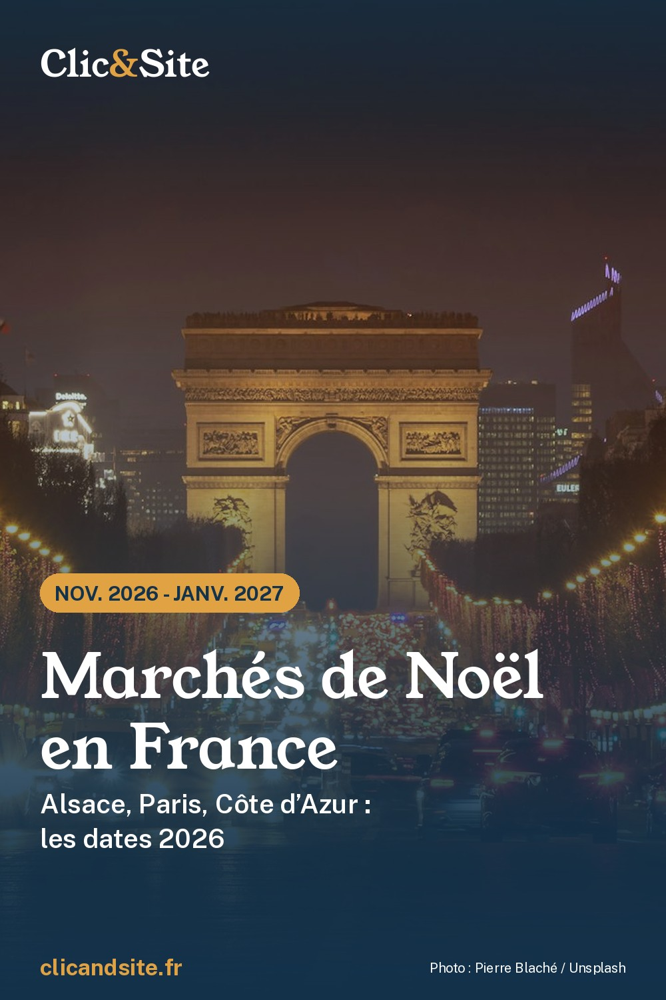

Marchés de Noël en France 2026 : le calendrier
Alsace, Paris ou Côte d’Azur : les dates d’ouverture et de fermeture des grands marchés de Noël 2026.
Photo : Pierre Blaché / Unsplash
Les marchés de Noël ouvrent en France entre mi-novembre et début décembre 2026. Trois régions sortent du lot : l’Alsace pour l’ambiance traditionnelle, Paris pour les illuminations et les grands magasins, et la Côte d’Azur pour un Noël au soleil. Voici le calendrier 2026, par date d’ouverture, avec un lien vers notre guide détaillé pour chaque destination.
L’entrée est libre et gratuite sur tous ces marchés.
Le calendrier 2026
- 12 nov.Paris – La Défense
L’un des plus grands marchés de Noël d’Île-de-France, jusqu’au 31 décembre 2026.
- 14 nov.Paris – Tuileries
Jusqu’au 3 janvier 2027, tous les jours de 11 h à 23 h 30.
- 22 nov.Paris – Champs-Élysées
Les illuminations s’allument le 22 novembre et le marché de Noël revient sur l’avenue, de la Concorde au rond-point, jusqu’au 4 janvier 2027.
- 23 nov.Colmar
Six marchés dans la vieille ville jusqu’au 29 décembre ; le marché gourmand et la grande roue jusqu’au 3 janvier 2027.
- 26 nov.Paris – Notre-Dame
Square René-Viviani, face à la cathédrale, jusqu’au 27 décembre 2026.
- 27 nov.Strasbourg
Le Christkindelsmärik de la place Broglie, le plus ancien de France, jusqu’au 24 décembre 2026.
- 27 nov.Riquewihr et Kaysersberg
Jusqu’au 20 décembre 2026 ; Kaysersberg seulement du vendredi au dimanche. Navettes de Noël depuis la gare de Colmar.
- 27 nov.Nice et Cannes
Jusqu’au 3 janvier 2027 : jardin Albert-Ier et place Masséna à Nice, allées de la Liberté à Cannes.
- 4 déc.Monaco
Le village de Noël du port Hercule, quai Albert-Ier, jusqu’au 3 janvier 2027, avec une patinoire à côté.
Quelle région choisir ?
L’Alsace
La plus traditionnelle : chalets, vin chaud et villages à colombages. Strasbourg et Colmar se relient en train, et des navettes desservent les villages depuis Colmar.
Paris
Pour les illuminations des Champs-Élysées, les vitrines des grands magasins et plusieurs marchés, à combiner avec une croisière sur la Seine.
La Côte d’Azur
Le Noël le plus doux : Nice, Cannes et Monaco sont à moins d’une heure de train les unes des autres, et les marchés restent ouverts jusqu’au 3 janvier 2027.
Nos conseils
- Venez en semaine : le samedi est le jour le plus chargé partout.
- Attention aux dates de fermeture : Riquewihr et Kaysersberg ferment le 20 décembre, Strasbourg le 24 ; Paris et la Côte d’Azur restent ouverts jusqu’au début janvier.
- Réservez l’hôtel tôt, surtout à Strasbourg et Colmar pour les week-ends de décembre.
Dates relevées en novembre 2026 auprès des villes et des offices de tourisme ; vérifiez avant de partir.
Nos guides de Noël


Activités à réserver
Deux visites à réserver pour profiter des marchés de Noël.
-
Visites guidées des marchés de Noël
Balades commentées dans la Grande Île et dégustations.
-
Tour des illuminations de Noël
Visites en bus, à pied ou en bateau pour voir Paris illuminé.
Liens partenaires.

Quels marchés restent ouverts pendant les vacances scolaires ? Voir notre calendrier des vacances de Noël 2026.
Pour un cadeau à vivre plutôt qu’à déballer, voir nos idées de sorties à offrir à Noël.
Questions fréquentes
Quand ouvrent les marchés de Noël en 2026 ?
Entre mi-novembre et début décembre : La Défense le 12 novembre, les Tuileries le 14, Colmar le 23, Strasbourg, Riquewihr, Kaysersberg, Nice et Cannes le 27 novembre, Monaco le 4 décembre 2026.
Quel est le plus ancien marché de Noël de France ?
Celui de Strasbourg, le Christkindelsmärik, qui existe depuis 1570. En 2026, il est ouvert du 27 novembre au 24 décembre, place Broglie.
Quels marchés de Noël sont ouverts après Noël ?
Paris (Tuileries et Champs-Élysées), Nice, Cannes et Monaco restent ouverts jusqu’au 3 ou 4 janvier 2027, et Colmar jusqu’au 29 décembre, avec son marché gourmand jusqu’au 3 janvier.